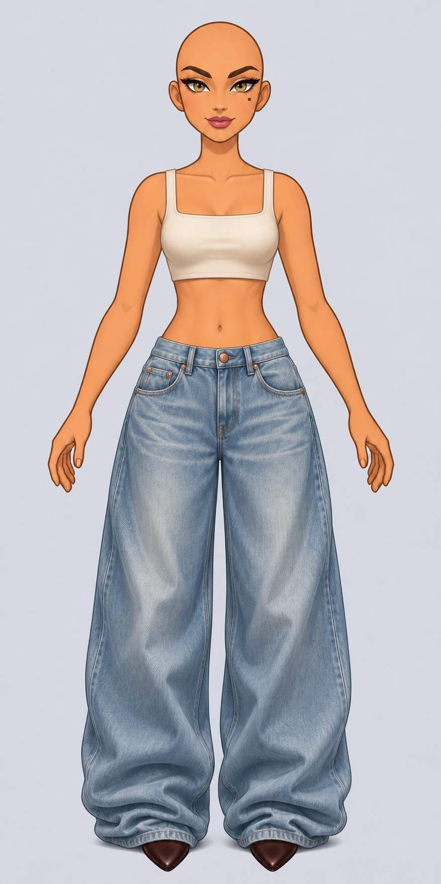
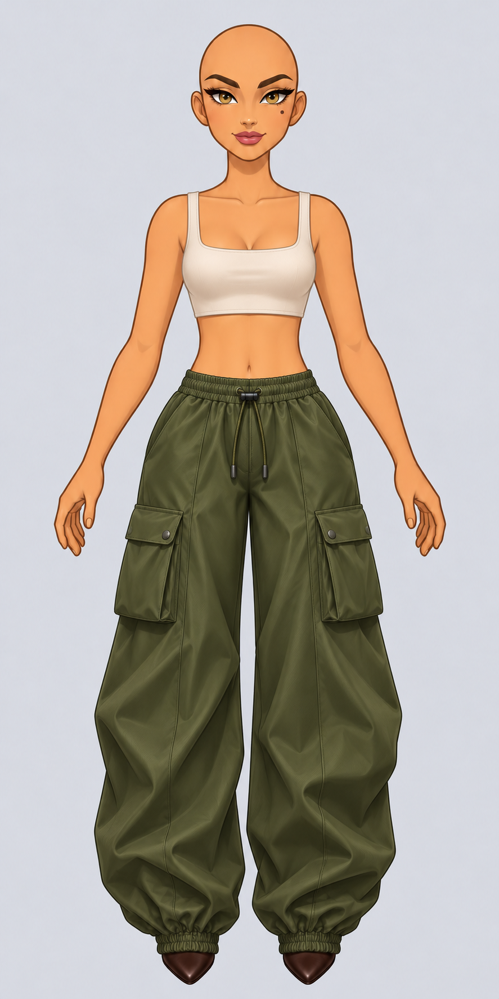
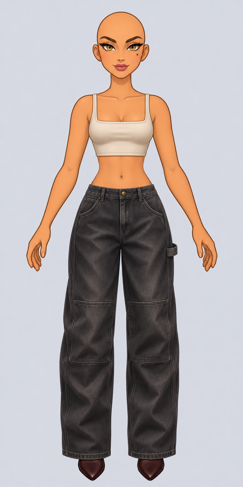
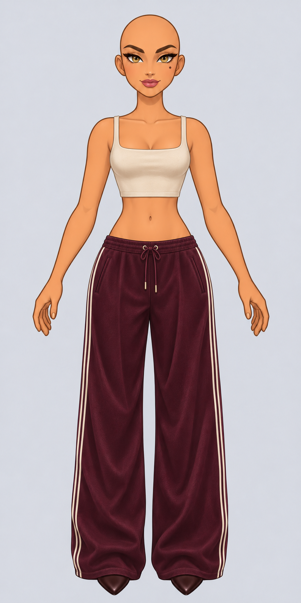
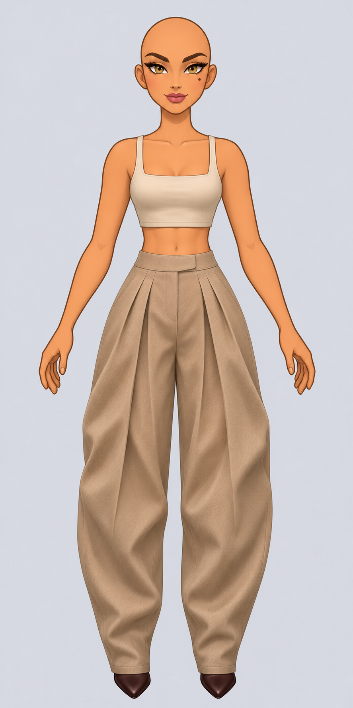
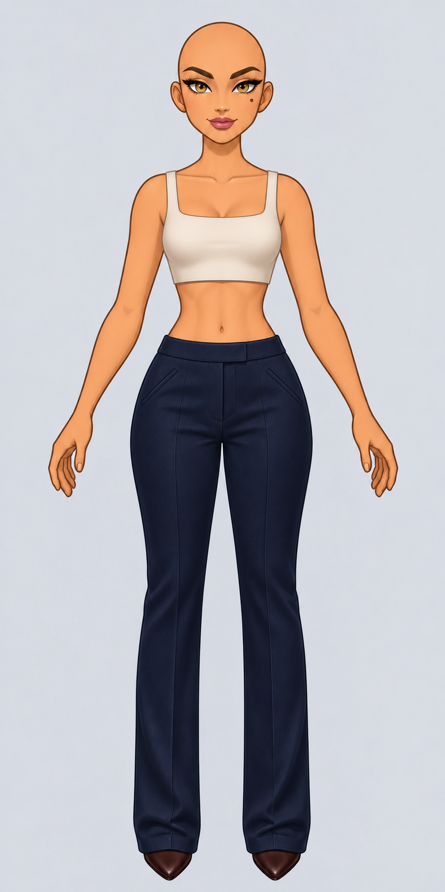
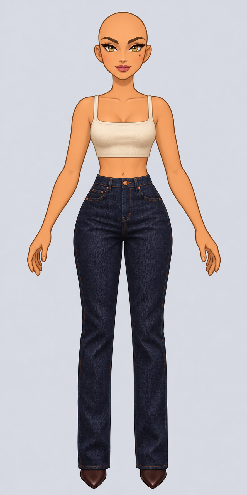
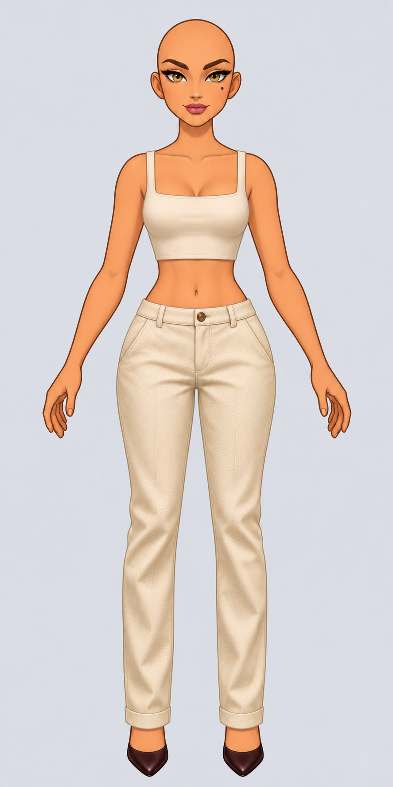
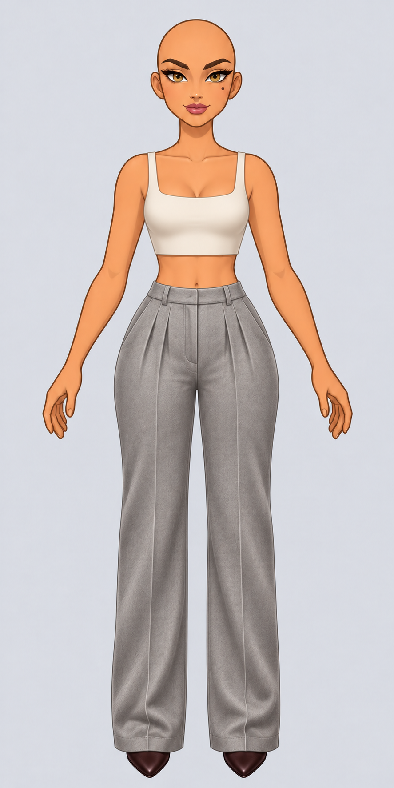
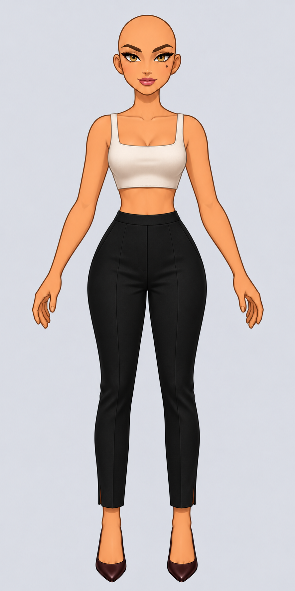

01Dalle
Baggy skate
Jean bleu glacier, jambe très ample et ourlet qui casse sur la chaussure.
Un petit monde · Atelier d’Iris · Planche 02
Dix propositions de face. Clique sur une silhouette pour voir la coupe, la taille et les détails en grand.

Baggy skate
Jean bleu glacier, jambe très ample et ourlet qui casse sur la chaussure.

Cargo parachute
Nylon olive, poches à soufflet et chevilles resserrées.

Baggy charpentier
Denim gris délavé, genoux renforcés et boucle marteau.

Jogger large
Jersey bordeaux, bandes crème et jambe droite ample.

Baggy à plis
Gabardine sable, deux plis profonds et volume arrondi.

Tailleur droit
Laine bleu nuit, pli net et fermeture discrète.

Jean droit
Denim brut, cinq poches et surpiqûres tabac.

Chino droit
Sergé écru, poches obliques et petit revers.

Tailleur à pinces
Laine gris chiné, taille haute et jambes longues.

Pantalon cigarette
Crêpe noir, jambe fuselée et fente à la cheville.